가스기사 (2010-05-09 기출문제)
1과목: 가스유체역학
1. 직각좌표계 상에서 Euler 기술법으로 유동을 기술할 때
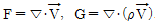
로 정의되는 두 함수에 대한 설명 중 틀린 것은? (단,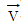
는 유체의 속도, ρ는 유체의 밀도를 나타낸다.)- 밀도가 일정한 유체의 정상유동((steady flow)에서는 F＝0이다.
- 압축성(compressible) 유체의 정상유동(steady flow) 에서는 G＝0이다.
- 밀도가 일정한 유체의 비정상유동(unsteady flow)에서는 F≠0이다.
- 압축성(compressible) 유체의 비정상유동(unsteady flow)에서는 G≠0이다.
(정답률: 58%)

2. 다음중 등엔트로피 과정은?
- 가역단열 과정
- 비가역 등온 과정
- 수축과 확대 과정
- 마찰이 있는 가역적 과정
(정답률: 87%)
3. 그림은 축소–확대노즐의 각 위치에서 압력(p)을 도시한 것이다. 노즐 내에서 충격파가 발생하는 경우는? (단, 그림 중 pr은 용기내부압력이다.)
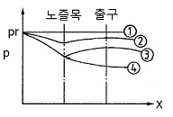
- 압력곡선이 ①과 ②의 사이인 경우
- 압력곡선이 ②와 ③의 사이인 경우
- 압력곡선이 ③과 ④의 사이인 경우
- 압력곡선이 ④의 아래인 경우
(정답률: 74%)
4. 원관 내에 유체의 흐름형태(층류, 난류)를 결정하는데 다음 중 가장 관련이 있는 힘은?
- 압력과 중력
- 점성력과 압력
- 관성력과 압력
- 관성력과 점성력
(정답률: 85%)
5. 4℃의 물의 체적 탄성계수는 2.0×104㎏f/cm2이다. 이 물 속에서의 음속은 몇 m/s인가? (단, 물의 밀도는 102kgfㆍs2/m4 이다)
- 139
- 340
- 1400
- 14000
(정답률: 57%)
6. 유체 속으로 입자가 자유낙하할 때 종말속도(terminal velocity)가 의미하는 것은?
- 속도가 없어지는 점에서 속도
- 가속도가 없어지는 점에서의 속도
- 분체입자가 땅에 닿을 때의 속도
- 입자가 움직이기 위해 필요한 최소의 속도
(정답률: 77%)
7. 관 속으로 흐르는 유체의 흐름에서 평균유속(average velocity)을 나타낸 것은? (단, 는 평균유속, s는 단면적, ρ는 유체의 밀도, u는 선속도를 나타낸다.)
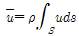
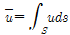
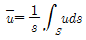
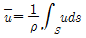
(정답률: 59%)
8. 전양정 30m, 송출량 7.5m3/min, 펌프의 효율 0.8인 펌프의 수동력은 약 몇 kW인가? (단, 물의 밀도는 1000㎏/m3이다.)
- 29.4
- 36.8
- 42.8
- 46.8
(정답률: 51%)
9. 1차원 흐름에서 수직충격파가 발생하면 어떻게 되는가?
- 속도, 압력, 밀도가 증가
- 압력, 밀도, 온도가 증가
- 속도, 온도, 밀도가 증가
- 압력, 밀도, 속도가 감소
(정답률: 78%)
10. 면적이 줄어드는 통로에서의 등엔트로피 유동에 대한 설명이다. 다음 중 옳은 것은?
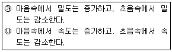
- ㉮ 만 옳다.
- ㉯ 만 옳다.
- ㉮, ㉯ 모두 옳다.
- 모두 틀리다.
(정답률: 85%)
11. 성능이 동일한 n 대의 펌프를 서로 병렬로 연결하고 원래와 같은 양정에서 작동시킬 때 유체의 토출량은?
- 1/n로 감소한다.
- n배로 증가한다.
- 원래와 동일하다.
- 1/(2n)로 감소한다.
(정답률: 74%)
12. 다음 중 비압축성 유체의 흐름에 가장 가까운 것은?
- 달리는 고속열차 주위의 기류
- 초음속으로 나는 비행기 주위의 기류
- 관 속에서 수격작용을 일으키는 유동
- 물속을 주행하는 잠수함 주위의 수류
(정답률: 85%)
13. 체적이 20m3인 유체가 있다. 이 유체의 비중이 0.674이면 유체의 질량은 몇 ㎏인가?(오류 신고가 접수된 문제입니다. 반드시 정답과 해설을 확인하시기 바랍니다.)
- 1348
- 13480
- 2967.3
- 29673
(정답률: 58%)
14. 직경 1m, 높이 4m인 수직원통에 깊이 2m의 물을 넣고 원통 중심축에 대하여 60rpm 으로 회전시킬 때 원통 중심부와 벽면의 수위 차는 약 몇 m인가?
- 0.42
- 0.50
- 0.61
- 0.70
(정답률: 44%)
15. 다음 중 터보기계의 성능특성을 나타내는데 사용되는 변수로 가장 거리가 먼 것은?
- 비속도
- 유량계수
- 동력계수
- Froude 수
(정답률: 74%)
16. 단면적이 변화하는 수평 관로에 밀도가 ρ인 이상유체가 흐르고 있다. 단면적 A1인 곳에서의 압력은 P1, 단면적이 A2인 곳에서의 압력은 P2이다. A2＝A1/2이면 단면적이 A2인 곳에서의 평균 유속은?
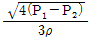
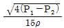
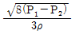
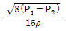
(정답률: 69%)
17. 수축노즐에서의 압축성 유체의 등엔트로피 유동에 대한 임계 압력비(P*/P0)는? (단, k는 비열비이다.)
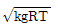
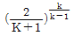
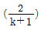
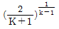
(정답률: 74%)
18. 다음 중 에너지의 단위는?
- dyn(dyne)
- N(newton)
- J(joule)
- W(watt)
(정답률: 72%)
19. 지름이 25㎝인 원형관 속을 5.7m/s의 평균속도로 물이 흐르고 있다. 40m에 걸친 수두 손실이 5m라면 이때의 Darcy 마찰계수는?
- 0.0189
- 0.1547
- 0.2089
- 0.2621
(정답률: 71%)
20. 압축성 유체의 유속계산에 사용되는 Mach 수의 표현으로 옳은 것은?
- 음속/유체의속도
- 유체의속도/음속
- (음속)2
- 유체의속도×음속
(정답률: 75%)
2과목: 연소공학
21. 기체연료의 공기비(m)는 얼마가 가장 적당한가?
- 1.1~1.3
- 1.3~1.5
- 1.4~2.0
- 2.1~2.4
(정답률: 73%)
22. 층류연소속도에 대한 설명으로 가장 거리가 먼 것은?
- 층류연소속도는 압력에 따라 결정된다.
- 층류연소속도는 표면적에 따라 결정된다.
- 층류연소속도는 연료의 종류에 따라 결정된다.
- 층류연소속도는 가스의 흐름 상태에는 무관하다.
(정답률: 49%)
23. 오토(otto)사이클의 효율을 η1, 디젤(diesel)사이클의 효율을 η2, 사바테(Sabathe)사이클의 효율을 η3이라 할 때 공급열량과 압축비가 같을 경우 효율의 크기는?
- η1＞η2＞η3
- η1＞η3＞η2
- η2＞η1＞η3
- η2＞η3＞η1
(정답률: 81%)
24. 다음 가연성가스 및 증기 중 최소 착화에너지 값이 가장 작은 것은?
- 메탄
- 암모니아
- 에틸렌
- 이황화탄소
(정답률: 47%)
25. 다음은 정압연소 사이클의 대표적인 브레이톤 사이클(Brayton cycle)의 T-S선도이다. 이 그림에 대한 설명 중 옳지 않은 것은?
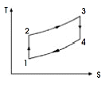
- 1-2의 과정은 가역단열압축 과정이다.
- 2-3의 과정은 가역정압가열 과정이다.
- 3-4의 과정은 가역정압팽창 과정이다.
- 4-1의 과정은 가역정압배기 과정이다.
(정답률: 67%)
26. 도시가스의 조성을 조사해보니 부피조성으로 H2 30%, CO 14%, CH4 49%, CO2 5%, O2 2%를 얻었다. 이 도시가스를 연소시키기 위한 이론산소량(Nm3)은?
- 1.18
- 2.18
- 3.18
- 4.18
(정답률: 46%)
27. 옥탄(g)의 연소 엔탈피는 반응물 중의 수증기가 응축되어 물이 되었을 때 25℃에서 –48220kJ/㎏이다. 이 상태에서 옥탄(g)의 저위발열량은 약 몇 kJ/㎏인가? (단, 25℃ 물의 증발엔탈피[hfg]는 2441.8kJ/㎏이다.)
- 40750
- 42320
- 44750
- 45778
(정답률: 51%)
28. 일산화탄소(CO)의 특성에 대한 설명 중 틀린 것은?
- 공기 중에서 잘 연소한다.
- 공기 중 폭발범위는 약 12.5~74v%이다.
- 공기보다 약간 가벼운 무색, 무취의 기체로 독성이 강하다.
- 상온에서 염소와 반응하여 포스핀을 생성한다.
(정답률: 77%)
29. 다음 중 증기원동기의 가장 기본이 되는 동력 사이클은?
- 오토(otto)사이클
- 디젤(diesel)사이클
- 랭킨(rankine)사이클
- 사바테(sabathe)사이클
(정답률: 74%)
30. 연료의 연소 시 완전연소를 위한 방법이 아닌 것은?
- 연소실의 온도를 고온으로 유지할 것
- 연료를 적당하게 예열하여 공급할 것
- 연료의 연소시간을 가능한 한 짧게 할 것
- 연소실의 용적을 넓게 할 것
(정답률: 77%)
31. 메탄가스 1Nm3를 10%의 과잉공기량으로 완전연소시켰을 때의 습연소 가스량은 약 몇 Nm3인가?
- 5.2
- 7.3
- 9.4
- 11.6
(정답률: 53%)
32. 중량 50㎏f인 물체를 4m 들어 올리는데 필요한 일을 열량으로 환산하면 약 몇 kcal인가?
- 0.468
- 0.485
- 4.683
- 4.590
(정답률: 57%)
33. 다음 열량의 단위에 대한 설명 중 틀린 것은?
- 1⑤Btu를 1Therm 이라 한다.
- 1CHU는 순수한 물 1 ㎏의 온도를 1℉ 올리는데 필요한 열량을 말한다.
- 1Btu는 순수한 물 1ɭb의 온도를 1℉ 변화시키는데 필요한 열량을 말한다.
- 1Kcal는 수순한 물 1㎏을 14.5℃에서 15.5℃ 까지 올리는데 필요한 열량을 말한다.
(정답률: 61%)
34. 저위발열량이 10000kcal/㎏인 연료를 3㎏ 연소시켰을 때 연소가스의 열용량이 15kcal/℃ 였다면 이때의 이론연소 온도는?
- 1000℃
- 2000℃
- 3000℃
- 4000℃
(정답률: 68%)
35. 오토 사이클에서 압축비(ℇ)가 10일 때 열효율은 약 몇 %인가? (단, 비열비[k]는 1.4)
- 60.2
- 62.5
- 64.2
- 66.5
(정답률: 64%)
36. 압력이 0.1MPa, 체적이 3m3인 273.15K의 공기가 이상적으로 단열압축되어 그 체적이 1/3로 감소되었다. 엔탈피 변화량은 약 몇 kJ인가? (단, 공기의 기체상수는 0.287kJ/㎏·K, 비열비는 1.4이다.)
- 560
- 570
- 580
- 590
(정답률: 50%)
37. 1종 장소와 2종 장소에 적합한 구조로 전기기기를 전폐구조의 용기 내부에 불활성가스를 압입하여 내부압력을 유지함으로서 가연성가스가 용기내부로 유입되지 않도록 한 방폭구조를 의미하는 것은?
- 안전증방폭구조(e)
- 내압방폭구조(d)
- 유입방폭구조(o)
- 압력방폭구조(p)
(정답률: 60%)
38. 가스 안전성 평가에서 사용되는 위험성 평가기법 중 정성적 위험성평가 기법이 아닌 것은?
- Check List법
- HAZOP기법
- FTA기법
- WHAT-IF기법
(정답률: 76%)
39. 연소범위에 대한 설명으로 옳은 것은?
- N2를 가연성 가스에 혼합하면 연소범위는 넓어진다.
- CO2를 가연성가스에 혼합하면 연소범위가 넓어진다.
- 가연성가스는 온도가 일정하고 압력이 내려가면 연소범위가 넓어진다.
- 가연성가스는 온도가 일정하고 압력이 올라가면 연소범위가 넓어진다.
(정답률: 77%)
40. 정적 비열이 0.782kcal/kmol·℃인 일반가스의 정압비열은 약 몇 kcal/kmol·℃인가? (단, 일반가스 정수는 1.987kcal/kmol·℃이다.)
- 1.6
- 2.8
- 3.8
- 5.0
(정답률: 68%)
3과목: 가스설비
41. 고압가스 용기의 재료로 사용되는 강의 성분 중 탄소, 인, 유황의 함유량은 제한되고 있다. 그 이유로서 다음[보기]중 옳은 것으로만 나열된 것은?
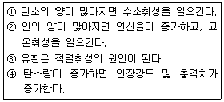
- ①, ②
- ②, ③
- ③, ④
- ①, ③
(정답률: 62%)
42. 금속재료의 열처리 방법에 대한 설명으로 틀린 것은?
- 담금질 : 강의 경도나 강도를 증가시키기 위하여 적당히 가열한 후 급냉을 시킨다.
- 뜨임 : 인성을 증가시키기 위해 담금질 온도보다 조금 낮게 가열한 후 급냉을 시킨다.
- 불림 : 소성가공 등으로 거칠어진 조직을 미세화하거나 정상상태로 하기 위해 가열 후 공냉시킨다.
- 풀림 : 잔류응력을 제거하거나 냉간가공을 용이하게 하기 위하여 뜨임보다 약간 높게 가열하여 노중에서 서냉시킨다.
(정답률: 72%)
43. 가연성 가스로서 폭발범위가 넓은 것부터 좁은 것의 순으로 바르게 나열된 것은?
- 아세틸렌 – 수소 – 일산화탄소 – 산화에틸렌
- 아세틸렌 – 산화에틸렌 – 수소 – 일산화탄소
- 아세틸렌 – 수소 – 산화에틸렌 – 일산화탄소
- 아세틸렌 – 일산화탄소 – 수소 – 산화에틸렌
(정답률: 75%)
44. 다음 그림은 어떤 종류의 압축기인가?
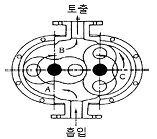
- 루트식
- 가동날개식
- 나사식
- 플런저식
(정답률: 81%)
45. 30℃의 액체 5000L를 2시간 동안에 5℃로 냉각시키는데 소요되는 열량은 약 몇 냉동톤(RT)에 해당하는가? (단, 액체의 비중과 비열은 각각 0.8과 0.6cal/g℃이다.)
- 1.5RT
- 9RT
- 13.5RT
- 18RT
(정답률: 57%)
46. 2단 감압식 조정기(Regulator)에 대한 설명으로 옳지 않은 것은?
- 2단 감압식 1차용 조정기는 각 연소기구에 맞는 압력으로 공급이 가능하다.
- 2단 감압식 2차용 조정기는 단단식저압조정기의 대용으로 사용할 수 없다.
- 2단 감압식 조정기는 입상배관에 의한 압력 강하를 보정할 수 있다.
- 2단 감압방식은 공급 압력이 안정적이지만 재액화의 문제가 따른다.
(정답률: 45%)
47. 액화가스 저장탱크의 저장능력을 구하는 식은? (단, V는 용기 내용적, P는 최고충전압력, C는 충전상수, d는 상용온도에서의 액화가스의 비중이다.)
- 10PV
- (10P＋1)V
- C/V
- 0.9dV
(정답률: 64%)
48. 가스보일러를 사용하여 45℃의 온수 1 ton을 얻기 위하여 가스 소비량은 약 몇 ㎏ 이 되겠는가? (단, 가스보일러의 열효율은 70%, 냉수입구온도는 15℃로 하며, 사용 가스는 프로판 가스로서 12000kcal/㎏로 한다.)
- 1.79
- 3.15
- 3.57
- 6.30
(정답률: 35%)
49. LNG 저장탱크에서 상이한 액체 밀도로 인하여 충상화된 액체의 불안정한 상태가 바로 잡힐 때 생기는 LNG의 급격한 물질 혼합 현상으로 상당한 양의 증발가스가 발생하는 현상은?
- 롤오버(Roll-over)현상
- 증발(Boil-off)현상
- BLEVE 현상
- Fire Ball현상
(정답률: 52%)
50. 왕복형 압축기의 특징에 대한 설명으로 옳은 것은?
- 회전형이며 압축효율이 낮다.
- 압축 시 맥동이 생기지 않는다.
- 용량조정의 범위가 좁다.
- 쉽게 고압을 얻을 수 있다.
(정답률: 55%)
51. 어떤 냉매를 팽창밸브를 통과하여 분출시킬 경우 교축 후의 상태변화가 아닌 것은?
- 엔탈피는 일정하다.
- 엔트로피가 감소한다.
- 압력이 강하한다.
- 온도가 떨어진다.
(정답률: 68%)
52. 과류차단 안전기구가 부착된 것으로 배관과 호스 또는 배관과 카풀러를 연결하는 구조의 콕은?
- 호스콕
- 퓨즈콕
- 상자콕
- 노즐콕
(정답률: 79%)
53. 다음 중 펌프의 서징(surging)현상을 바르게 설명한 것은?
- 유체가 배관 속을 흐르고 있을 때 부분적으로 증기가 발생하는 현상
- 펌프내의 온도변화에 따라 유체가 성분의 변화를 일으켜 펌프에 장애가 생기는 현상
- 배관을 흐르고 있는 액체에 속도를 급격하게 변화시키면 액체에 심한 압력변화가 생기는 현상
- 송출압력과 송출유량 사이에 주기적인 변동이 일어나는 현상
(정답률: 66%)
54. 고온수증기 개질프로세스(ICI)법의 공정이 아닌 것은?
- 원료의 탈황
- 가스 제조
- CO의 변성
- CH4의 개질
(정답률: 57%)
55. 공기액화사이클 중 압축기에서 압축된 가스가 열교환기로 들어가 팽창기에서 일을 하면서 단열팽창하여 가스를 액화시키는 사이클은?
- 필립스의 액화사이클
- 캐스케이드 액화사이클
- 클라우드의 액화사이클
- 린데의 액화사이클
(정답률: 57%)
56. LP가스의 발열량이 26000kcal/m3이다. 발열량 6000kcal/m3로 희석하려면 약 몇 m3의 공기를 희석하여야 하는가?
- 2.2m3
- 3.3m3
- 4.3m3
- 5.2m3
(정답률: 39%)
57. 가스렌지에 연결된 호스에 직경 1.0㎜의 구멍이 뚫려 250㎜H2O 압력으로 LP가스가 3시간 동안 누출되었다면 LP가스의 분출량은 약 몇 L인가? (단, LP가스의 비중은 1.2이다.)
- 360
- 390
- 420
- 450
(정답률: 60%)
58. 토양 중에 금속부식을 시험편을 이용하여 실험하였다. 시험결과에 맞지 않는 것은?
- 전기저항이 낮은 토양 중의 부식속도는 크다.
- 배수가 불량한 점토 중의 부식속도는 크다.
- 염기성 세균이 번식하는 토양 중의 부식속도는 크다.
- 통기성이 좋은 토양에서 부식속도는 점차 커진다.
(정답률: 84%)
59. 액셜 플로우(Axial Flow)식 정압기의 특징에 대한 설명으로 틀린 것은?
- 변칙 unloading 형이다.
- 정특성, 동특성 모두 좋다.
- 저차압이 될수록 특성이 좋다.
- 극히 간단한 작동방식을 가지고 있다.
(정답률: 61%)
60. 천연가스에 첨가하는 부취제의 성분으로 적합하지 않은 것은?
- THT(Tetra Hydro Thiophene)
- TBM(Tertiary Butyl Mercaptan)
- DMS(Dimethyl Sulfide)
- DMDS(Dimethyl Disulfide)
(정답률: 84%)
4과목: 가스안전관리
61. 아황산가스 500㎏을 차량에 적재하여 운반할 때 휴대하여야 하는 소석회의 양은 몇 ㎏ 이상으로 규정되어 있는가?
- 10
- 20
- 50
- 100
(정답률: 63%)
62. 액화석유가스 공급자는 수요자의 시설에 대하여 안전점검을 실시하고 안전관리 실시대장을 작성하여 몇 년간 보존하여야 하는가?
- 1
- 2
- 3
- 5
(정답률: 62%)
63. LPG 용기 보관실의 바닥면적이 40m2라면 통풍구의 크기는 최소 얼마로 하여야 하는가?
- 10000cm2
- 11000cm2
- 12000cm2
- 13000cm2
(정답률: 82%)
64. 지하에 설치하는 액화석유가스 저장탱크의 재료인 레디믹스콘크리트의 규격이 잘못 짝지어진 것은?
- 굵은 골재의 최대치수 : 25㎜
- 설계강도 : 21~24MPa
- 슬럼프(slump) : 12~15㎝
- 물-시멘트비 : 83%이하
(정답률: 71%)
65. 다음 연소기 중 가스렌지로 볼 수 없는 것은? (단, 사용압력은 3.3kPa 이하로 한다.)
- 전가스소비량이 9000kcal/h인 3구 버너를 가진 연소기
- 전가스소비량이 11000kcal/h인 4구 버너를 가진 연소기
- 전가스소비량이 13000kcal/h인 6구 버너를 가진 연소기
- 전가스소비량이 15000kcal/h인 4구 버너를 가진 연소기
(정답률: 51%)
66. 내용적이 4000L인 용기에 액화암모니아를 저장할 때 저장능력은 약 얼마인가? (단, 암모니아 정수는 1.86이다.)
- 2150㎏
- 2930㎏
- 3476㎏
- 7440㎏
(정답률: 54%)
67. 초저온용기에 대한 신규검사 시 단열성능시험을 실시할 경우 내용적에 대한 침입열량 기준으로 옳은 것은?
- 내용적 500L 이상 - 0.002kcal/h·℃·L 이하
- 내용적 1000L 이상 - 0.002kcal/h·℃·L 이하
- 내용적 1500L 이상 - 0.003kcal/h·℃·L 이하
- 내용적 2000L 이상 - 0.0⑤kcal/h·℃·L 이하
(정답률: 54%)
68. 공기액화분리기를 운전하는 과정에서 안전대책상 운전을 중지하고 액화산소를 방출해야 하는 경우는? (단, 액화산소통 내의 액화산소 5L 중의 기준이다.)
- 아세틸렌이 0.1mg 을 넘을 때
- 아세틸렌이 0.5mg 을 넘을 때
- 탄화수소의 탄소의 질량이 50mg 을 넘을 때
- 탄화수소의 탄소의 질량이 500mg 을 넘을 때
(정답률: 59%)
69. 탱크주밸브, 긴급차단장치에 속하는 밸브 그 밖의 중요한 부속품이 돌출된 저장탱크는 그 부속품을 차량의 좌측면이 아닌 곳에 설치한 단단한 조작상자 내에 설치한다. 이 경우 조작상자와 차량의 뒷범퍼와의 수평 거리는 얼마이상 이격하여야 하는가?
- 20㎝
- 30㎝
- 40㎝
- 50㎝
(정답률: 72%)
70. 차량에 고정된 탱크에 설치된 긴급차단장치는 그 성능이 원격조작에 의하여 작동되고 차량이 고정된 저장탱크나 이에 접속하는 배관 외면의 온도가 얼마일 때 자동적으로 작동하도록 되어 있는가?
- 90℃
- 100℃
- 110℃
- 120℃
(정답률: 79%)
71. 냉동기의 냉매가스와 접하는 부분은 냉매가스의 종류에 따라 금속재료의 사용이 제한된다. 다음 중 사용 가능한 가스와 그 금속재료가 옳게 연결된 것은?
- 암모니아 : 동 및 동합금
- 염화메탄 : 알루미늄합금
- 프레온 : 2% 초과 마그네슘을 함유한 알루미늄합금
- 탄산가스 : 스테인리스강
(정답률: 62%)
72. 시안화수소의 충전 시 안전관리사항으로 옳은 것은?
- 용기에 충전하는 시안화수소의 농도는 98% 이상이고 안정제로 인산을 첨가한다.
- 충전한 용기는 12시간 이상 정치한다.
- 1일에 1회 이상 질산구리벤젠 등의 시험지로 가스누출 시험을 한다.
- 충전 후 3개월이 경과되기 전에 다른 용기에 옮긴다.
(정답률: 65%)
73. 고압가스제조설비에서 비상전력을 반드시 갖추지 않아도 되는 설비는?
- 물분무장치
- 자동제어장치
- 벤트스택
- 긴급차단장치
(정답률: 60%)
74. 고압가스제조소 내 매몰배관 중간검사 대상 지정 개소의 기준으로 옳은 것은?
- 검사대상 배관길이 100m 마다 1개소 지정
- 검사대상 배관길이 500m 마다 1개소 지정
- 검사대상으로 지정한 부분의 길이 합은 검사대상 총 배관길이의 5% 이상
- 검사대상으로 지정한 부분의 길이 합은 검사대상 총 배관길이의 7% 이상
(정답률: 67%)
75. 고압가스 충전용기 운반차량의 전후 보기 쉬운 곳에 표시하여야 하는 경계표지의 용어는?
- “위험고압가스”
- “위험충전가스”
- “위험물”
- “고압가스 운반차량”
(정답률: 73%)
76. 용기 종류별 부속품의 기호를 바르게 나타낸 것은?
- 초저온용기 및 저온용기의 부속품 : AG
- 압축가스를 충전하는 용기의 부속품 : LPG
- 아세틸렌가스를 충전하는 용기의 부속품 : PG
- 액화석유가스 외의 액화가스를 충전하는 용기의 부속품 : LG
(정답률: 77%)
77. 일반도시가스사업자 시설에 설치된 정압기의 분해 점검 주기는?
- 6개월에 1회 이상
- 1년에 1회 이상
- 2년에 1회 이상
- 3년에 1회 이상
(정답률: 45%)
78. 산화에틸렌의 저장탱크에는 45℃에서 그 내부가스의 압력이 몇 MPa 이상이 되도록 질소가스 또는 탄산가스를 충전하여야 하는가?
- 0.1
- 0.3
- 0.4
- 1
(정답률: 60%)
79. “도시가스사업자 안전점검원의 선임기준이 되는 배관의 길이를 산정할 때 ( )과 ( )은 포함하지 아니하며 하나의 차로에 2개 이상의 배관이 나란히 설치되어 있고 그 배관 외면간의 거리가 ( )m 미만인 것은 하나의 배관으로 산정한다.” 다음 분 ( )안에 들어갈 것으로 올바르게 순서대로 연결된 것은?
- 본관, 공급관, 10
- 공급관, 내관, 5
- 사용자공급관, 내관, 5
- 사용자공급관, 내관, 3
(정답률: 52%)
80. 산소 및 독성가스의 운반 중 가스누출부분의 수리가 불가능한 사고 발생 시 응급조치사항으로 틀린 것은?
- 상황에 따라 안전한 장소로 운반한다.
- 부근에 있는 사람을 대피시키고, 동행인은 교통통제를 하여 출입을 금지시킨다.
- 화재가 발생한 경우 소화하지 말고 즉시 대피한다.
- 독성가스가 누출한 경우에는 가스를 제독한다.
(정답률: 84%)
5과목: 가스계측기기
81. 패러데이 법칙을 이용하여 전도성 액체의 유량을 측정하는 유량계는?
- 전자유량계
- 초음파유량계
- 소용돌이(渦) 유량계
- 터빈유량계
(정답률: 82%)
82. 열전대를 사용하는 온도계 중 가장 고온을 측정할 수 있는 것은?
- R형
- K형
- E형
- J형
(정답률: 84%)
83. 침종식 압력계에 대한 설명으로 옳지 않은 것은?
- 진동, 충격의 영향을 적게 받는다.
- 아르키메데스의 원리를 이용한 것이다.
- 압력이 낮은 기체의 압력을 측정하는데 쓰인다.
- 측정범위는 단종식이 5~30mmH2O, 복종식은 100mmH2O이다.
(정답률: 62%)
84. 루트미터와 습식가스미터 특징 중 루트미터의 특징에 해당되는 것은?
- 유량이 정확하다.
- 사용 중 수위조정 등의 관리가 필요하다.
- 실험실용으로 적합하다.
- 설치 공간이 적게 필요하다.
(정답률: 80%)
85. 반도체식 가스검지기의 반도체 재료로 가장 적당한 것은?
- 산화니켈(NiO)
- 산화알루미늄(Al2O3)
- 산화주석(SnO2)
- 이산화망간(MnO2)
(정답률: 51%)
86. 압력계의 읽음이 5㎏/cm2일 때 이 압력을 수은주로 환산하면 약 얼마인가?
- 367.8㎜Hg
- 3678㎜Hg
- 6800㎜Hg
- 68000㎜Hg
(정답률: 70%)
87. 탄화수소 성분에 한하여 검지를 할 수 있으며 검지감도가 높고, 노이즈가 적고 사용이 편리한 장점이 있는 가스 검출기는?
- 접촉연소식
- 반도체식
- 불꽃이온화식
- 검지관식
(정답률: 73%)
88. 브르돈관 압력계로 측정한 압력이 10㎏/cm2이었다. 부유 피스톤식 압력계의 실린더 지름이 6㎝, 피스톤의 지름이 2㎝일 때 추와 피스톤의 무게는?
- 22.6㎏
- 27.1㎏
- 31. 4㎏
- 35.8㎏
(정답률: 50%)
89. 분광법에 의한 기기분석법에서 흡광도는 매질을 통과하는 길이와 용액의 농도에 비례한다는 법칙은?
- Beer의 법칙
- Debye-Hükel의 법칙
- Kirchhoff의 법칙
- Charles의 법칙
(정답률: 60%)
90. 입력과 출력이 그림과 같을 때 제어동작은?
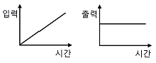
- 비례동작
- 미분동작
- 적분동작
- 비례적분동작
(정답률: 59%)
91. 미리 정해 놓은 순서에 따라서 단계별로 진행시키는 제어방식에 해당하는 것은?
- 수동 제어(Manual control)
- 프로그램 제어(Program control)
- 시퀀스 제어(Sequence control)
- 피드백 제어(Feedback control)
(정답률: 74%)
92. 다음 온도계 중 구조상 자동제어에 사용하기에 부적당한 온도계는?
- 백금저항 온도계
- 서미스터(Thermister)저항 온도계
- 크로멜-알루멜 열전대 온도계
- 베크만 온도계
(정답률: 57%)
93. 자동조절계의 비례적분동작에서 적분시간에 대한 설명으로 가장 적당한 것은?
- P동작에 의한 조작신호의 변화가 I 동작만으로 일어나는데 필요한 시간
- P동작에 의한 조작신호가 PI동작만으로 일어나는데 필요한 시간
- I동작에 의한 조작신호의 변화가 PI동작만으로 일어나는데 필요한 시간
- I동작에 의한 조작신호의 변화가 P동작만으로 일어나는데 필요한 시간
(정답률: 56%)
94. 다음 압력계 중 압력측정범위가 가장 큰 것은?
- U자형 압력계
- 링밸런스식 압력계
- 부르돈관 압력계
- 분동식 압력계
(정답률: 44%)
95. 상대습도가 30%이고, 압력과 온도가 각각 1.1bar, 75℃인 습공기가 100m3/h로 공정에 유입될 때 몰습도 (mol H2O/mol Dry Air)는? (단, 75℃에서 포화수증기압은 289㎜Hg이다.)
- 0.017
- 0.117
- 0.129
- 0.317
(정답률: 52%)
96. 다음 중 HCN에 대하여 검지할 수 있는 시험지는?
- KI-전분지
- 연당지
- 염화제1구리착염지
- 초산벤젠지
(정답률: 73%)
97. 가스보일러의 배기가스를 오르자트 분석기를 이용하여 시료 50mL를 채취하였더니 흡수 피펫을 통과한 후 남은 시료 부피는 각각 CO2 40mL, O2 20mL, CO 17mL이었다. 이 가스 중 N2의 조성은?
- 30%
- 34%
- 64%
- 70%
(정답률: 66%)
98. 막식가스미터에서 패킹 재료의 열화가 주된 원인이 되는 가스미터의 고장은?
- 내부 누출
- 감도 불량
- 기차 불량
- 부동
(정답률: 39%)
99. 부유 피스톤형 압력계에 있어서 실린더 직경 2㎝, 피스톤 무게합계가 20㎏일 때 이 압력계에 접속된 부르돈관 압력계의 읽음이 7㎏/cm2를 나타내었다. 이 부르돈관 압력계의 오차는 약 몇 %인가?
- 0.5%
- 1%
- 5%
- 10%
(정답률: 39%)
100. 오리피스 유량계의 적용 원리는?
- 부력의 법칙
- 토리첼리의 법칙
- 베르누이 법칙
- Gibbs의 법칙
(정답률: 78%)
이유는, Euler 기술법에서 F와 G는 각각 유체의 운동량과 에너지 보존 법칙을 나타내는 식으로 정의됩니다. 밀도가 일정한 유체의 경우, 운동량과 에너지는 보존되므로 F와 G는 모두 0이 됩니다. 따라서, 밀도가 일정한 유체의 정상유동(steady flow)에서는 F＝0이고, 비정상유동(unsteady flow)에서도 F는 0입니다.